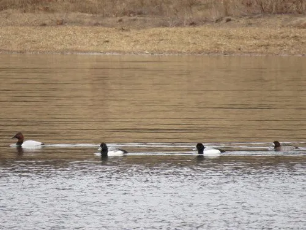

鸟类 · 动物界
斑背潜鸭 Aythya marila

北半球寒带的潜水鸭，雄鸟头颈墨绿、背灰带细纹、体侧银白，冬季成群在近海和河口越冬，善深潜觅食贝类。
- 分类
- 门脊索动物门纲鸟纲目雁形目科鸭科属潜鸭属
- 栖息环境
- 北极苔原与寒温带的湖泊、沼泽，冬季多在近海海湾、河口和潟湖
- 地理分布
- 繁殖于欧亚大陆北部与北美洲北部，越冬于西欧、黑海、日本、中国东部沿海及北美沿海
- 保护级别
- IUCN 无危（LC）
物种志
斑背潜鸭体长 42–51 cm，体重 700–1200 g。雄鸟头部和颈部墨绿色并带光泽，胸部黑色，背部浅灰并密布细波纹，体侧银白，尾下覆羽黑色，喙灰蓝色。雌鸟通体棕褐，眼周有一圈宽阔的白色羽环，喙基也有白色带。
它们繁殖于欧亚大陆北部和北美洲北部的苔原湖泊、沼泽与河湾，冬季南迁至西欧沿海、黑海、里海、日本、中国东部沿海及北美东西海岸。斑背潜鸭冬季多在近海海湾、河口和潟湖集群，可潜水数米取食软体动物、甲壳类和水草。繁殖期在 6–7 月，巢建于苔原水边的草丛中，每窝产卵 8–11 枚，雌鸟孵化约 26–28 天。它们迁徙和越冬时结成大群，是沿海湿地常见的冬候鸟。
形态与习性
- 食性软体动物、甲壳类和水生植物
- 体长42–51 cm
- 体重700–1200 g
- 繁殖6–7 月，每窝 8–11 枚，孵化 26–28 天
- 迁徙冬季迁至西欧、黑海、日本及中国沿海
- 寿命约 10–15 年
趣味知识
- 斑背潜鸭的背羽布满细密波纹，远看像一层灰色鳞片。
- 冬季它们常成数百只的大群浮在近海，随潮水进出海湾。
- 它潜水时可停留半分钟以上，用喙把泥沙中的贝类筛出来。